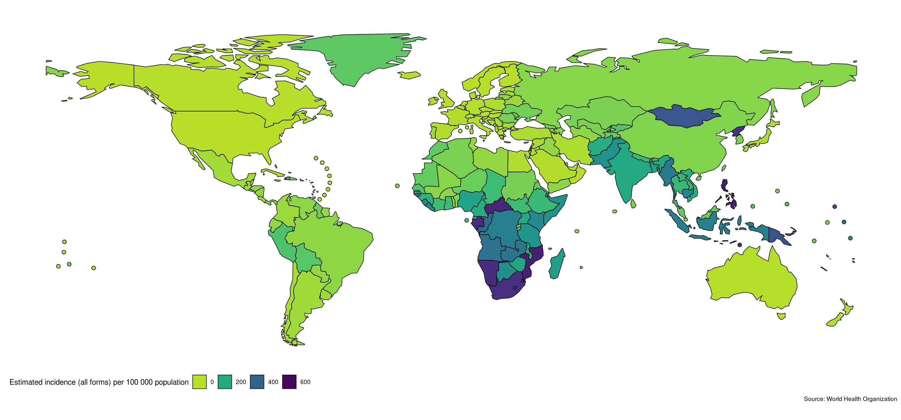
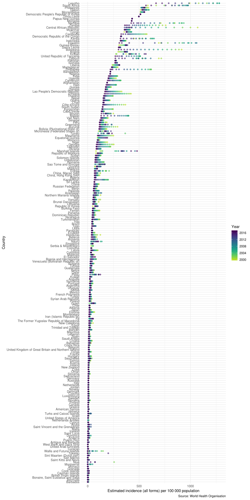
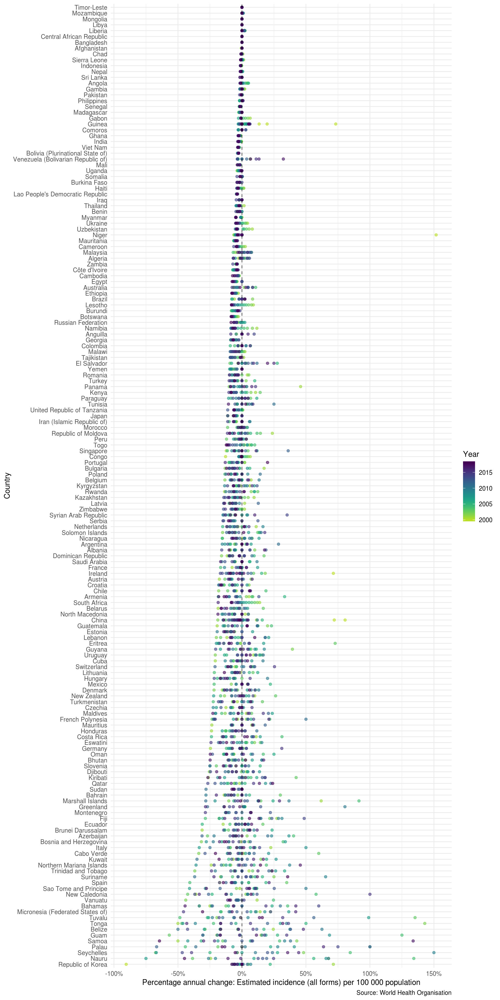
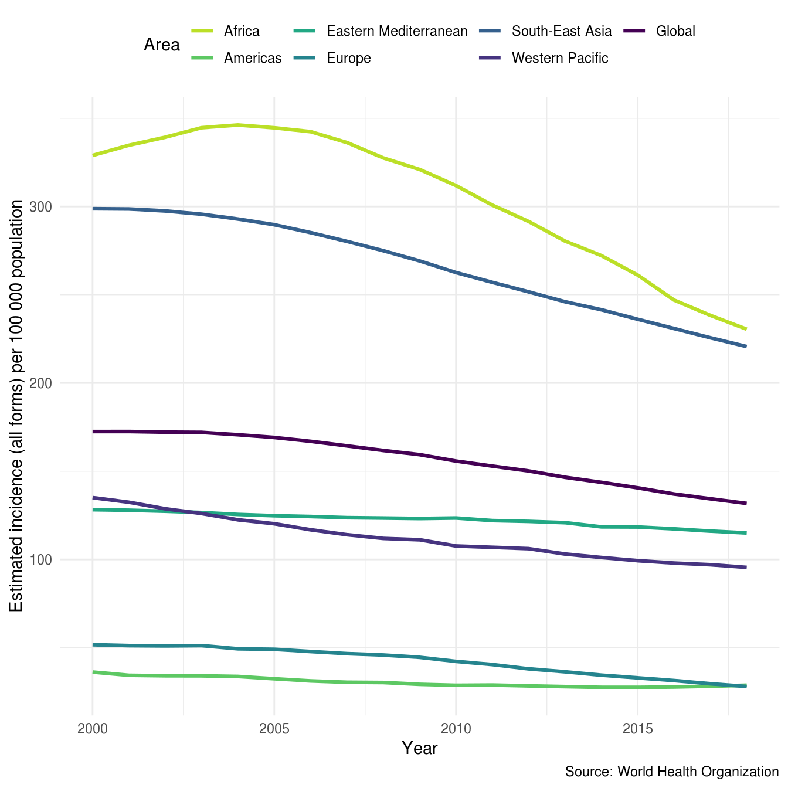
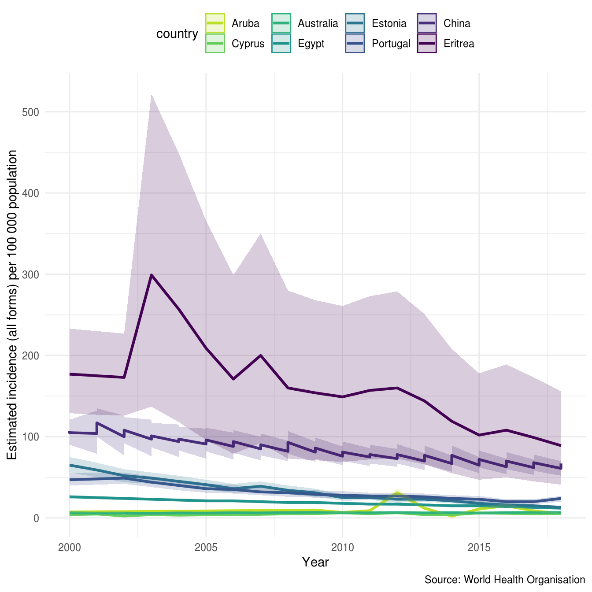
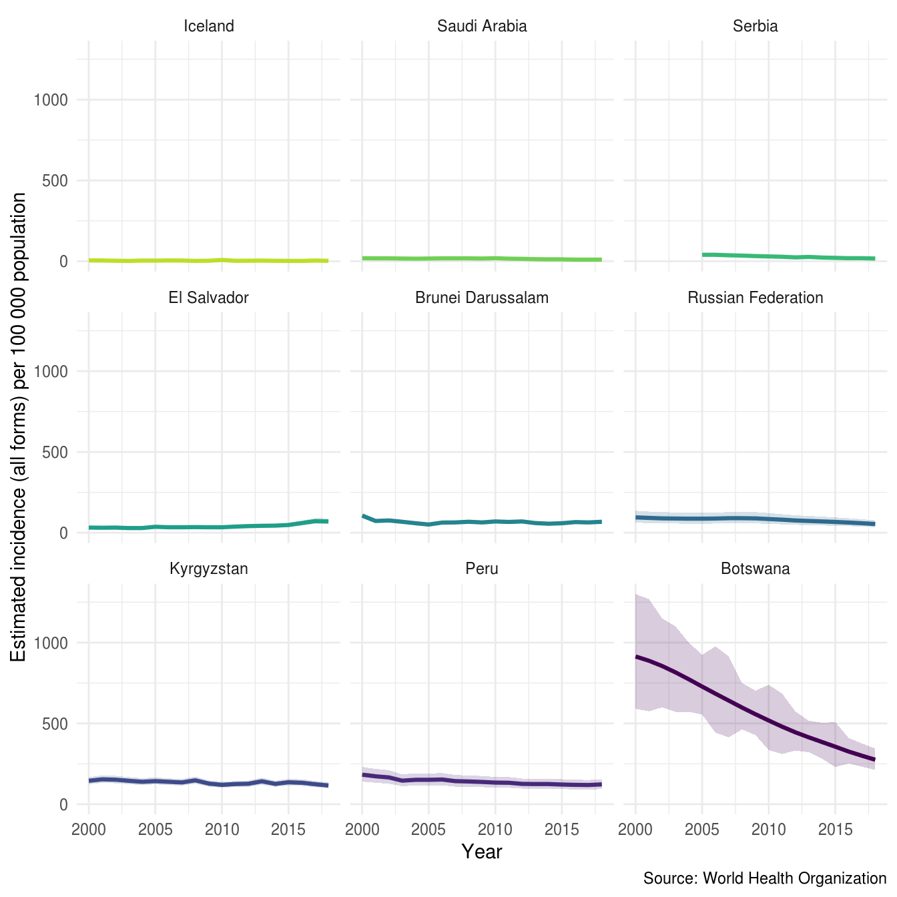
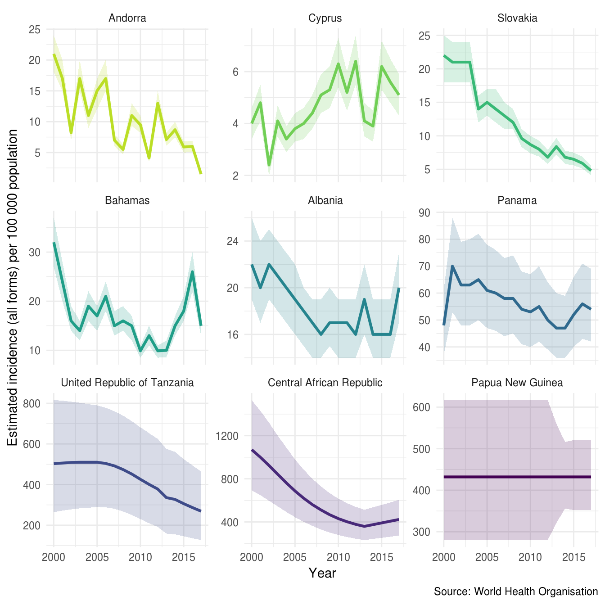
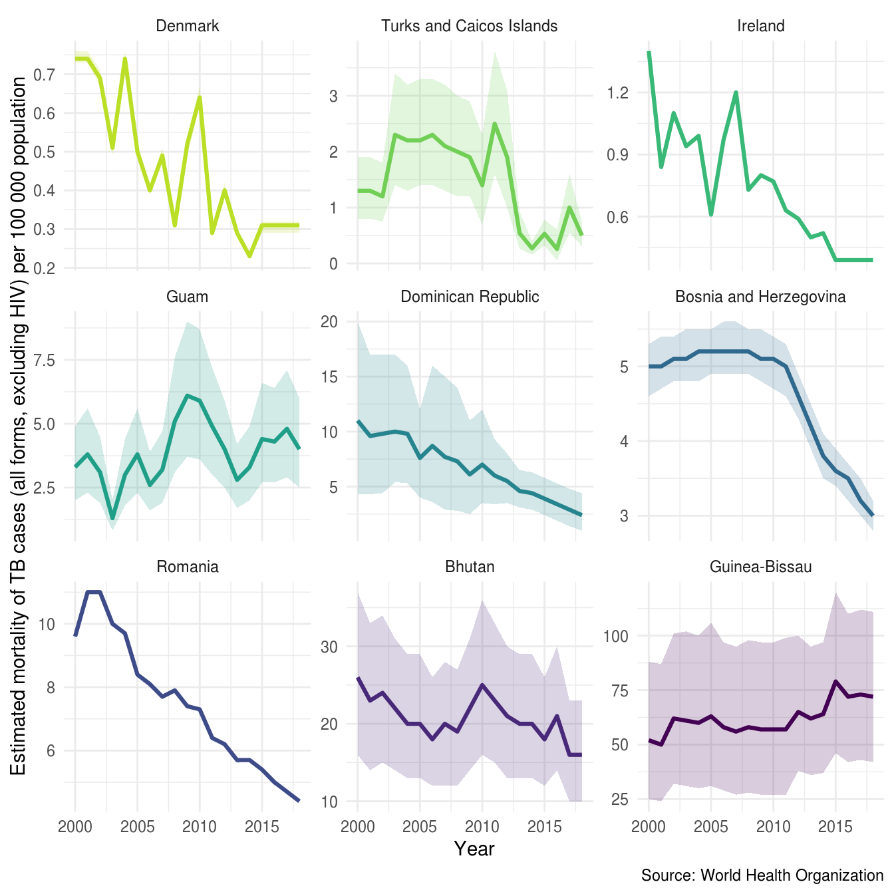
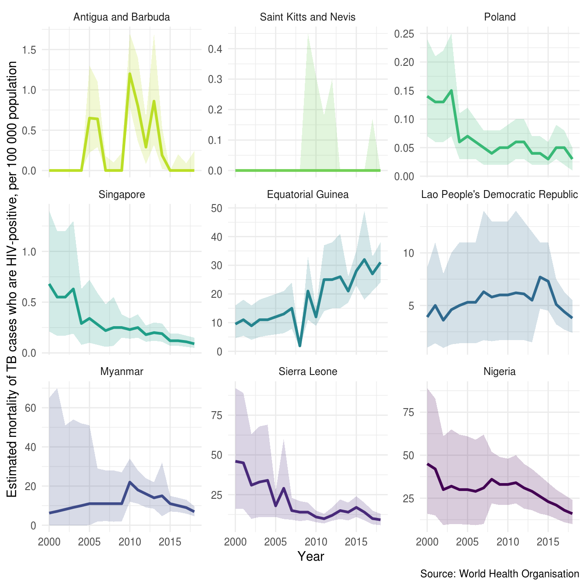

First load the package. We also load several other packages to help quickly explore the data.
Get TB burden data with a single function call. This will download the data if it has never been accessed and then save a local copy to R’s temporary directory (see tempdir()). If a local copy exists from the current session then this will be loaded instead.
tb_burden <- get_tb_burden()
#> Downloading data from: https://extranet.who.int/tme/generateCSV.asp?ds=estimates
#> Saving data to: /tmp/RtmpCZYJFJ/tb_burden.rds
#> Downloading data from: https://extranet.who.int/tme/generateCSV.asp?ds=mdr_rr_estimates
#> Saving data to: /tmp/RtmpCZYJFJ/mdr_tb.rds
#> Joining TB burden data and MDR TB data.
tb_burden
#> # A tibble: 4,040 x 71
#> country iso2 iso3 iso_numeric g_whoregion year e_pop_num e_inc_100k
#> <chr> <chr> <chr> <int> <chr> <int> <int> <dbl>
#> 1 Afghan… AF AFG 4 Eastern Me… 2000 20779953 190
#> 2 Afghan… AF AFG 4 Eastern Me… 2001 21606988 189
#> 3 Afghan… AF AFG 4 Eastern Me… 2002 22600770 189
#> 4 Afghan… AF AFG 4 Eastern Me… 2003 23680871 189
#> 5 Afghan… AF AFG 4 Eastern Me… 2004 24726684 189
#> 6 Afghan… AF AFG 4 Eastern Me… 2005 25654277 189
#> 7 Afghan… AF AFG 4 Eastern Me… 2006 26433049 189
#> 8 Afghan… AF AFG 4 Eastern Me… 2007 27100536 189
#> 9 Afghan… AF AFG 4 Eastern Me… 2008 27722276 189
#> 10 Afghan… AF AFG 4 Eastern Me… 2009 28394813 189
#> # … with 4,030 more rows, and 63 more variables: e_inc_100k_lo <dbl>,
#> # e_inc_100k_hi <dbl>, e_inc_num <int>, e_inc_num_lo <int>,
#> # e_inc_num_hi <int>, e_tbhiv_prct <dbl>, e_tbhiv_prct_lo <dbl>,
#> # e_tbhiv_prct_hi <dbl>, e_inc_tbhiv_100k <dbl>,
#> # e_inc_tbhiv_100k_lo <dbl>, e_inc_tbhiv_100k_hi <dbl>,
#> # e_inc_tbhiv_num <int>, e_inc_tbhiv_num_lo <int>,
#> # e_inc_tbhiv_num_hi <int>, e_mort_exc_tbhiv_100k <dbl>,
#> # e_mort_exc_tbhiv_100k_lo <dbl>, e_mort_exc_tbhiv_100k_hi <dbl>,
#> # e_mort_exc_tbhiv_num <int>, e_mort_exc_tbhiv_num_lo <int>,
#> # e_mort_exc_tbhiv_num_hi <int>, e_mort_tbhiv_100k <dbl>,
#> # e_mort_tbhiv_100k_lo <dbl>, e_mort_tbhiv_100k_hi <dbl>,
#> # e_mort_tbhiv_num <int>, e_mort_tbhiv_num_lo <int>,
#> # e_mort_tbhiv_num_hi <int>, e_mort_100k <dbl>, e_mort_100k_lo <dbl>,
#> # e_mort_100k_hi <dbl>, e_mort_num <int>, e_mort_num_lo <int>,
#> # e_mort_num_hi <int>, cfr <dbl>, cfr_lo <dbl>, cfr_hi <dbl>,
#> # cfr_pct <int>, cfr_pct_lo <int>, cfr_pct_hi <int>,
#> # c_newinc_100k <dbl>, c_cdr <dbl>, c_cdr_lo <dbl>, c_cdr_hi <dbl>,
#> # source_rr_new <chr>, source_drs_coverage_new <chr>,
#> # source_drs_year_new <int>, e_rr_pct_new <dbl>, e_rr_pct_new_lo <dbl>,
#> # e_rr_pct_new_hi <dbl>, e_mdr_pct_rr_new <int>, source_rr_ret <chr>,
#> # source_drs_coverage_ret <chr>, source_drs_year_ret <int>,
#> # e_rr_pct_ret <dbl>, e_rr_pct_ret_lo <dbl>, e_rr_pct_ret_hi <dbl>,
#> # e_mdr_pct_rr_ret <int>, e_inc_rr_num <int>, e_inc_rr_num_lo <int>,
#> # e_inc_rr_num_hi <int>, e_mdr_pct_rr <dbl>,
#> # e_rr_in_notified_labconf_pulm <int>,
#> # e_rr_in_notified_labconf_pulm_lo <int>,
#> # e_rr_in_notified_labconf_pulm_hi <int>On top of the core datasets provided by default, getTBinR also supports importing multiple other datasets. These include data on latent TB, HIV surveillance, intervention budgets, and outcomes. The currently supported datasets are listed below,
| dataset | description | timespan | default |
|---|---|---|---|
| Estimates | Generated estimates of TB mortality, incidence, case fatality ratio, and treatment coverage (previously called case detection rate). Data available split by HIV status. | 2000-2017 | yes |
| Estimates | Generated estimates for the proportion of TB cases that have rifampicin-resistant TB (RR-TB, which includes cases with multidrug-resistant TB, MDR-TB), RR/MDR-TB among notified pulmonary TB cases. | 2017 | yes |
| Incidence by age and sex | Generated estimates of TB incidence stratified by age and sex. This dataset is currently experimental. | 2017 | no |
| Latent TB infection | Generated estimates incidence of latent TB stratified by age. | 2017 | no |
| Notification | TB notification dataset linking to TB notifications as raw numbers. Age-stratified, with good data dictionary coverage but has large amounts of missing data. | 1980-2017 | no |
| Drug resistance surveillance | Country level drug resistance surveillance. Lists drug resistance data from country level reporting. Good data dictionary coverage but has large amounts of missing data. | 2017 | no |
| Non-routine HIV surveillance | Country level, non-routine HIV surveillance data. Good data dictionary coverage but with a large amount of missing data. | 2007-2017 | no |
| Outcomes | Country level TB outcomes data. Lists numeric outcome data, very messy but with good data dictionary coverage. | 1994-2017 | no |
| Budget | Current year TB intervention budgets per country. Many of the data fields are cryptic but has good data dictionary coverage. | 2018 | no |
| Expenditure and utilisation | Previous year expenditure on TB interventions. Highly detailed, with good data dictionary coverage but lots of missing data. | 2017 | no |
| Policies and services | Lists TB policies that have been implemented per country. Highly detailed, with good data dictionary coverage but lots of missing data. | 2017 | no |
| Community engagement | Lists community engagement programmes. Highly detailed, with good data dictionary coverage but lots of missing data. | 2013-2017 | no |
| Laboratories | Country specific laboratory data. Highly detailed, with good data dictionary coverage but lots of missing data. | 2009-2017 | no |
These datasets can be imported into R by supplying the name of the required dataset to the additional_datasets argument of get_tb_burden (or any of the various plotting/summary functions). Alternatively, they can all be imported in one go using additional_datasets = "all", as below,
get_tb_burden(additional_datasets = "all", verbose = FALSE)
#> # A tibble: 8,694 x 485
#> country iso2 iso3 iso_numeric g_whoregion year e_pop_num e_inc_100k
#> <chr> <chr> <chr> <int> <chr> <int> <int> <dbl>
#> 1 Afghan… AF AFG 4 Eastern Me… 2000 20779953 190
#> 2 Afghan… AF AFG 4 Eastern Me… 2001 21606988 189
#> 3 Afghan… AF AFG 4 Eastern Me… 2002 22600770 189
#> 4 Afghan… AF AFG 4 Eastern Me… 2003 23680871 189
#> 5 Afghan… AF AFG 4 Eastern Me… 2004 24726684 189
#> 6 Afghan… AF AFG 4 Eastern Me… 2005 25654277 189
#> 7 Afghan… AF AFG 4 Eastern Me… 2006 26433049 189
#> 8 Afghan… AF AFG 4 Eastern Me… 2007 27100536 189
#> 9 Afghan… AF AFG 4 Eastern Me… 2008 27722276 189
#> 10 Afghan… AF AFG 4 Eastern Me… 2009 28394813 189
#> # … with 8,684 more rows, and 477 more variables: e_inc_100k_lo <dbl>,
#> # e_inc_100k_hi <dbl>, e_inc_num <int>, e_inc_num_lo <int>,
#> # e_inc_num_hi <int>, e_tbhiv_prct <dbl>, e_tbhiv_prct_lo <dbl>,
#> # e_tbhiv_prct_hi <dbl>, e_inc_tbhiv_100k <dbl>,
#> # e_inc_tbhiv_100k_lo <dbl>, e_inc_tbhiv_100k_hi <dbl>,
#> # e_inc_tbhiv_num <int>, e_inc_tbhiv_num_lo <int>,
#> # e_inc_tbhiv_num_hi <int>, e_mort_exc_tbhiv_100k <dbl>,
#> # e_mort_exc_tbhiv_100k_lo <dbl>, e_mort_exc_tbhiv_100k_hi <dbl>,
#> # e_mort_exc_tbhiv_num <int>, e_mort_exc_tbhiv_num_lo <int>,
#> # e_mort_exc_tbhiv_num_hi <int>, e_mort_tbhiv_100k <dbl>,
#> # e_mort_tbhiv_100k_lo <dbl>, e_mort_tbhiv_100k_hi <dbl>,
#> # e_mort_tbhiv_num <int>, e_mort_tbhiv_num_lo <int>,
#> # e_mort_tbhiv_num_hi <int>, e_mort_100k <dbl>, e_mort_100k_lo <dbl>,
#> # e_mort_100k_hi <dbl>, e_mort_num <int>, e_mort_num_lo <int>,
#> # e_mort_num_hi <int>, cfr <dbl>, cfr_lo <dbl>, cfr_hi <dbl>,
#> # cfr_pct <int>, cfr_pct_lo <int>, cfr_pct_hi <int>,
#> # c_newinc_100k <dbl>, c_cdr <dbl>, c_cdr_lo <dbl>, c_cdr_hi <dbl>,
#> # source_rr_new <chr>, source_drs_coverage_new <chr>,
#> # source_drs_year_new <int>, e_rr_pct_new <dbl>, e_rr_pct_new_lo <dbl>,
#> # e_rr_pct_new_hi <dbl>, e_mdr_pct_rr_new <int>, source_rr_ret <chr>,
#> # source_drs_coverage_ret <chr>, source_drs_year_ret <int>,
#> # e_rr_pct_ret <dbl>, e_rr_pct_ret_lo <dbl>, e_rr_pct_ret_hi <dbl>,
#> # e_mdr_pct_rr_ret <int>, e_inc_rr_num <int>, e_inc_rr_num_lo <int>,
#> # e_inc_rr_num_hi <int>, e_mdr_pct_rr <dbl>,
#> # e_rr_in_notified_labconf_pulm <int>,
#> # e_rr_in_notified_labconf_pulm_lo <int>,
#> # e_rr_in_notified_labconf_pulm_hi <int>, source_hh <chr>,
#> # e_hh_size <dbl>, prevtx_data_available <int>,
#> # newinc_con04_prevtx <int>, ptsurvey_newinc <int>,
#> # ptsurvey_newinc_con04_prevtx <int>, e_prevtx_eligible <dbl>,
#> # e_prevtx_eligible_lo <dbl>, e_prevtx_eligible_hi <dbl>,
#> # e_prevtx_kids_pct <dbl>, e_prevtx_kids_pct_lo <dbl>,
#> # e_prevtx_kids_pct_hi <dbl>, new_sp <int>, new_sn <int>, new_su <int>,
#> # new_ep <int>, new_oth <int>, ret_rel <int>, ret_taf <int>,
#> # ret_tad <int>, ret_oth <int>, newret_oth <int>, new_labconf <int>,
#> # new_clindx <int>, ret_rel_labconf <int>, ret_rel_clindx <int>,
#> # ret_rel_ep <int>, ret_nrel <int>, notif_foreign <int>, c_newinc <int>,
#> # new_sp_m04 <int>, new_sp_m514 <int>, new_sp_m014 <int>,
#> # new_sp_m1524 <int>, new_sp_m2534 <int>, new_sp_m3544 <int>,
#> # new_sp_m4554 <int>, …Once imported, these datasets can be used in the plotting and summary functions provided by getTBinR (by passing them to their df argument or using the additional_datasets argument in each function).
The WHO provides a large, detailed, data dictionary for use with the TB burden data. However, searching through this dataset can be tedious. To streamline this process getTBinR provides a search function to find the definition of a single or multiple variables. Again if not previously used this function will download the data dictionary to the temporary directory, but in subsequent uses will load a local copy.
vars_of_interest <- search_data_dict(var = c("country",
"e_inc_100k",
"e_inc_100k_lo",
"e_inc_100k_hi"))
#> Downloading data from: https://extranet.who.int/tme/generateCSV.asp?ds=dictionary
#> Saving data to: /tmp/RtmpCZYJFJ/dictionary.rds
#> 4 results found for your variable search for country, e_inc_100k, e_inc_100k_lo, e_inc_100k_hi
knitr::kable(vars_of_interest)| variable_name | dataset | code_list | definition |
|---|---|---|---|
| country | Country identification | Country or territory name | |
| e_inc_100k | Estimates | Estimated incidence (all forms) per 100 000 population | |
| e_inc_100k_hi | Estimates | Estimated incidence (all forms) per 100 000 population, high bound | |
| e_inc_100k_lo | Estimates | Estimated incidence (all forms) per 100 000 population, low bound |
We might also want to search the variable definitions for key phrases, for example mortality.
defs_of_interest <- search_data_dict(def = c("mortality"))
#> Loading data from: /tmp/RtmpCZYJFJ/dictionary.rds
#> 9 results found for your definition search for mortality
knitr::kable(defs_of_interest)| variable_name | dataset | code_list | definition |
|---|---|---|---|
| e_mort_100k | Estimates | Estimated mortality of TB cases (all forms) per 100 000 population | |
| e_mort_100k_hi | Estimates | Estimated mortality of TB cases (all forms) per 100 000 population, high bound | |
| e_mort_100k_lo | Estimates | Estimated mortality of TB cases (all forms) per 100 000 population, low bound | |
| e_mort_exc_tbhiv_100k | Estimates | Estimated mortality of TB cases (all forms, excluding HIV) per 100 000 population | |
| e_mort_exc_tbhiv_100k_hi | Estimates | Estimated mortality of TB cases (all forms, excluding HIV), per 100 000 population, high bound | |
| e_mort_exc_tbhiv_100k_lo | Estimates | Estimated mortality of TB cases (all forms, excluding HIV), per 100 000 population, low bound | |
| e_mort_tbhiv_100k | Estimates | Estimated mortality of TB cases who are HIV-positive, per 100 000 population | |
| e_mort_tbhiv_100k_hi | Estimates | Estimated mortality of TB cases who are HIV-positive, per 100 000 population, high bound | |
| e_mort_tbhiv_100k_lo | Estimates | Estimated mortality of TB cases who are HIV-positive, per 100 000 population, low bound |
Finally we could both search for a known variable and for key phrases in variable definitions.
vars_defs_of_interest <- search_data_dict(var = c("country"),
def = c("mortality"))
#> Loading data from: /tmp/RtmpCZYJFJ/dictionary.rds
#> 1 results found for your variable search for country
#> 9 results found for your definition search for mortality
knitr::kable(vars_defs_of_interest)| variable_name | dataset | code_list | definition |
|---|---|---|---|
| country | Country identification | Country or territory name | |
| e_mort_100k | Estimates | Estimated mortality of TB cases (all forms) per 100 000 population | |
| e_mort_100k_hi | Estimates | Estimated mortality of TB cases (all forms) per 100 000 population, high bound | |
| e_mort_100k_lo | Estimates | Estimated mortality of TB cases (all forms) per 100 000 population, low bound | |
| e_mort_exc_tbhiv_100k | Estimates | Estimated mortality of TB cases (all forms, excluding HIV) per 100 000 population | |
| e_mort_exc_tbhiv_100k_hi | Estimates | Estimated mortality of TB cases (all forms, excluding HIV), per 100 000 population, high bound | |
| e_mort_exc_tbhiv_100k_lo | Estimates | Estimated mortality of TB cases (all forms, excluding HIV), per 100 000 population, low bound | |
| e_mort_tbhiv_100k | Estimates | Estimated mortality of TB cases who are HIV-positive, per 100 000 population | |
| e_mort_tbhiv_100k_hi | Estimates | Estimated mortality of TB cases who are HIV-positive, per 100 000 population, high bound | |
| e_mort_tbhiv_100k_lo | Estimates | Estimated mortality of TB cases who are HIV-positive, per 100 000 population, low bound |
search_data_dict can also be used to explore the details of the variables included in each dataset. For example if we could explore all the variables included in the Latent TB dataset,
dataset_of_interest <- search_data_dict(dataset = "Latent")
#> Loading data from: /tmp/RtmpCZYJFJ/dictionary.rds
#> 11 results found for your dataset search for Latent
knitr::kable(dataset_of_interest)| variable_name | dataset | code_list | definition |
|---|---|---|---|
| e_prevtx_kids_pct | Latent TB infection | Estimated % of children received TB preventive therapy aged under 5 who are household contacts of TB cases and who are eligible for TB preventive therapy | |
| e_prevtx_kids_pct_hi | Latent TB infection | Estimated % of children received TB preventive therapy aged under 5 who are household contacts of TB cases and who are eligible for TB preventive therapy: High bound | |
| e_prevtx_kids_pct_lo | Latent TB infection | Estimated % of children received TB preventive therapy aged under 5 who are household contacts of TB cases and who are eligible for TB preventive therapy: Low bound | |
| e_hh_size | Latent TB infection | Estimated average household size | |
| e_prevtx_eligible | Latent TB infection | Estimated number of children aged under 5 who are household contacts of TB cases who are eligible for TB preventive therapy | |
| e_prevtx_eligible_hi | Latent TB infection | Estimated number of children aged under 5 who are household contacts of TB cases who are eligible for TB preventive therapy: high bound | |
| e_prevtx_eligible_lo | Latent TB infection | Estimated number of children aged under 5 who are household contacts of TB cases who are eligible for TB preventive therapy: low bound | |
| newinc_con04_prevtx | Latent TB infection | (If prevtx_data_available=60) Number of children aged under 5 started on TB preventive treatment who are household contacts of bacteriologically-confirmed new and relapse TB cases notified | |
| ptsurvey_newinc | Latent TB infection | (If prevtx_data_available=61) Number of bacteriologically-confirmed TB new and relapse cases notified in the reporting year whose medical records or treatment cards were included in a survey | |
| ptsurvey_newinc_con04_prevtx | Latent TB infection | (If prevtx_data_available=61) Number of children aged under 5 started on TB preventive treatment who are household contacts of the TB cases in ptsurvey_newinc | |
| source_hh | Latent TB infection | Source of estimate of average household size |
To start exploring the WHO TB data we map, the most recently available, global TB incidence rates. Mapping data can help identify spatial patterns.
getTBinR::map_tb_burden(metric = "e_inc_100k")
#> Loading data from: /tmp/RtmpCZYJFJ/tb_burden.rds
#> Loading data from: /tmp/RtmpCZYJFJ/mdr_tb.rds
#> Joining TB burden data and MDR TB data.
#> Loading data from: /tmp/RtmpCZYJFJ/dictionary.rds
#> 1 results found for your variable search for e_inc_100k
To showcase how quickly we can go from no data to plotting informative graphs we quickly explore incidence rates for all countries in the WHO data.
getTBinR::plot_tb_burden_overview(metric = "e_inc_100k",
interactive = FALSE)
#> Loading data from: /tmp/RtmpCZYJFJ/tb_burden.rds
#> Loading data from: /tmp/RtmpCZYJFJ/mdr_tb.rds
#> Joining TB burden data and MDR TB data.
#> Loading data from: /tmp/RtmpCZYJFJ/dictionary.rds
#> 1 results found for your variable search for e_inc_100k
Another way to compare incidence rates in countries is to look at the annual percentage change. The plot below only shows countries with a maximum incidence rate above 5 per 100,000.
higher_burden_countries <- tb_burden %>%
group_by(country) %>%
summarise(e_inc_100k = min(e_inc_100k)) %>%
filter(e_inc_100k > 5) %>%
pull(country) %>%
unique
getTBinR::plot_tb_burden_overview(metric = "e_inc_100k",
interactive = FALSE,
annual_change = TRUE,
countries = higher_burden_countries)
#> Loading data from: /tmp/RtmpCZYJFJ/tb_burden.rds
#> Loading data from: /tmp/RtmpCZYJFJ/mdr_tb.rds
#> Joining TB burden data and MDR TB data.
#> Loading data from: /tmp/RtmpCZYJFJ/dictionary.rds
#> 1 results found for your variable search for e_inc_100k
We might also be interested in getting a regional/global overview of TB incidence rates (Hint: Use search_data_dict to look up e_inc_100k to see what role this is playing here). See ?plot_tb_burden_summary for more ways to summarise TB metrics.
getTBinR::plot_tb_burden_summary(conf = NULL, metric_label = "e_inc_100k")
#> Loading data from: /tmp/RtmpCZYJFJ/dictionary.rds
#> 1 results found for your variable search for e_inc_100k
#> Loading data from: /tmp/RtmpCZYJFJ/tb_burden.rds
#> Loading data from: /tmp/RtmpCZYJFJ/mdr_tb.rds
#> Joining TB burden data and MDR TB data.
#> Loading data from: /tmp/RtmpCZYJFJ/dictionary.rds
#> 1 results found for your variable search for e_inc_num
#> Loading data from: /tmp/RtmpCZYJFJ/tb_burden.rds
#> Loading data from: /tmp/RtmpCZYJFJ/mdr_tb.rds
#> Joining TB burden data and MDR TB data.
#> Loading data from: /tmp/RtmpCZYJFJ/dictionary.rds
#> 1 results found for your variable search for e_inc_num
We could also get a quick overview of TB in a given group of countries in comparison to regional and global trends by looking at the most recent data using summarise_metric. This is used extensively in the supplied TB report (render_tb_report) to provide summary statistics.
## Get a summary of TB incidence rates for the united kingdom and germany
summarise_metric(metric = "e_inc_100k", countries = c("United Kingdom", "Germany")) %>%
kable
#> Loading data from: /tmp/RtmpCZYJFJ/tb_burden.rds
#> Loading data from: /tmp/RtmpCZYJFJ/mdr_tb.rds
#> Joining TB burden data and MDR TB data.| country | year | metric | world_rank | region_rank | avg_change |
|---|---|---|---|---|---|
| United Kingdom | 2018 | 8 (7.2 - 8.8) | 165 | 33 | -5.9% |
| Germany | 2018 | 7.3 (6.2 - 8.4) | 166 | 34 | 2.6% |
| ## Plotting Incid | ence Ra | tes over Time in 9 | Randomly Sam | pled Countries |
Diving deeper into the data lets plot a sample of 9 countries using the inbuilt plot_tb_burden function. Again plotting incidence rates, but this time with 95% confidence intervals. As you can see this isn’t a hugely informative graph. Lets improve it!
## Take a random sample of countries
sample_countries <- sample(unique(tb_burden$country), 9)
plot_tb_burden(tb_burden, metric = "e_inc_100k",
countries = sample_countries,
legend = "top")
#> Loading data from: /tmp/RtmpCZYJFJ/dictionary.rds
#> 1 results found for your variable search for e_inc_100k
We have faceted by country so that we can more easily see what is going on. This allows us to easily explore between country variation - depending on the sample there is likely to be a lot of this.
plot_tb_burden(tb_burden, metric = "e_inc_100k",
countries = sample_countries,
facet = "country")
#> Loading data from: /tmp/RtmpCZYJFJ/dictionary.rds
#> 1 results found for your variable search for e_inc_100k
To explore within country variation we need to change the scale of the y axis.
plot_tb_burden(tb_burden, metric = "e_inc_100k",
countries = sample_countries,
facet = "country",
scales = "free_y")
#> Loading data from: /tmp/RtmpCZYJFJ/dictionary.rds
#> 1 results found for your variable search for e_inc_100k
We might also be interested in mortality in both HIV negative and HIV positive cases in our sample countries. We can also look at this using plot_tb_burden as follows. Note we can do this without specifying the TB burden data, the plotting function will automatically find it either locally or remotely.
plot_tb_burden(metric = "e_mort_exc_tbhiv_100k",
countries = sample_countries,
facet = "country",
scales = "free_y")
#> Loading data from: /tmp/RtmpCZYJFJ/tb_burden.rds
#> Loading data from: /tmp/RtmpCZYJFJ/mdr_tb.rds
#> Joining TB burden data and MDR TB data.
#> Loading data from: /tmp/RtmpCZYJFJ/dictionary.rds
#> 1 results found for your variable search for e_mort_exc_tbhiv_100k
plot_tb_burden(metric = "e_mort_tbhiv_100k",
countries = sample_countries,
facet = "country",
scales = "free_y")
#> Loading data from: /tmp/RtmpCZYJFJ/tb_burden.rds
#> Loading data from: /tmp/RtmpCZYJFJ/mdr_tb.rds
#> Joining TB burden data and MDR TB data.
#> Loading data from: /tmp/RtmpCZYJFJ/dictionary.rds
#> 1 results found for your variable search for e_mort_tbhiv_100k